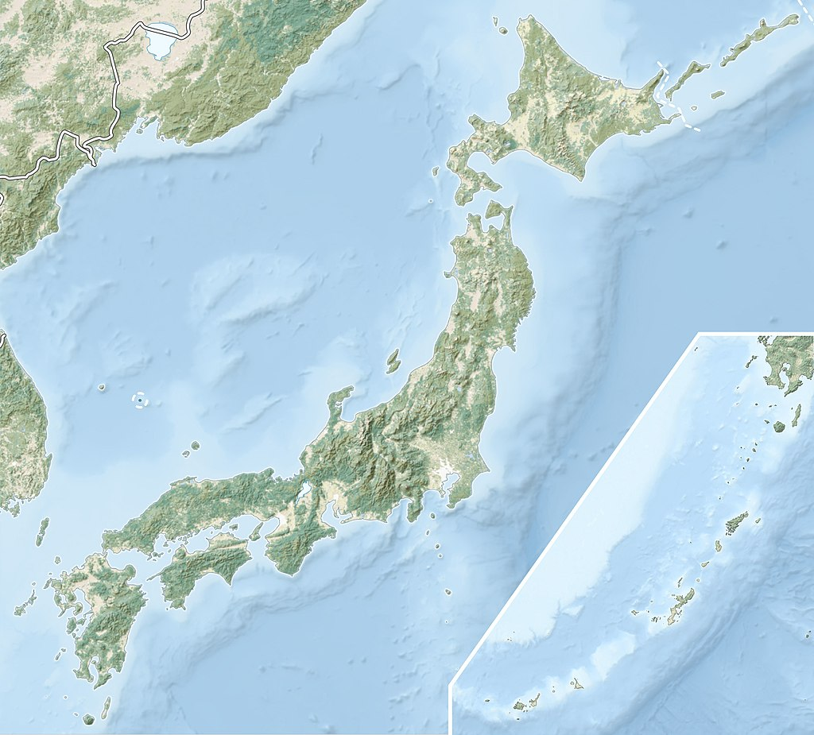
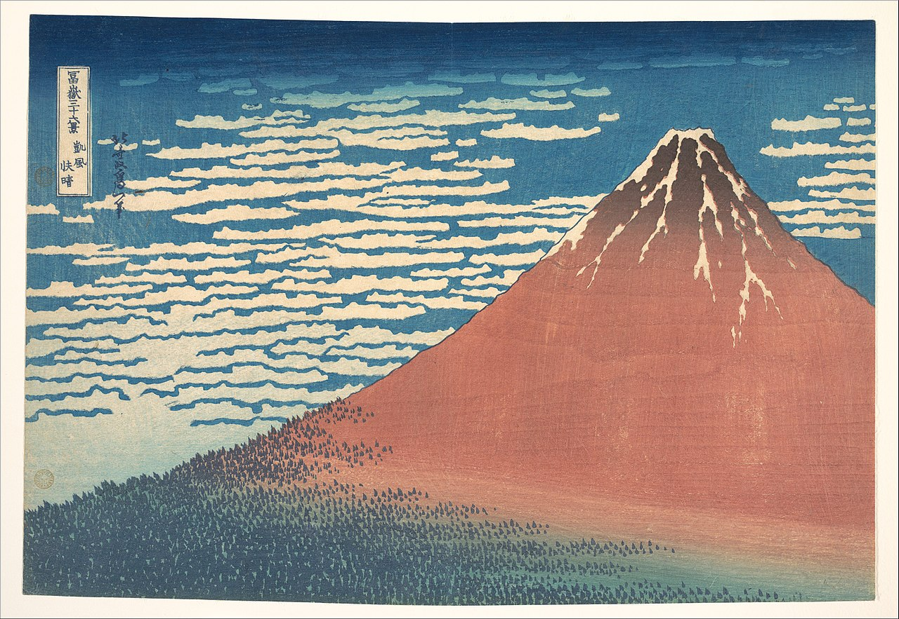
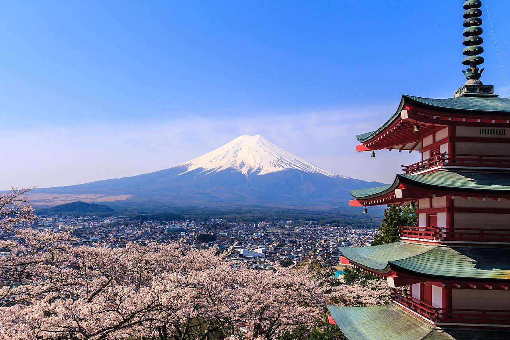
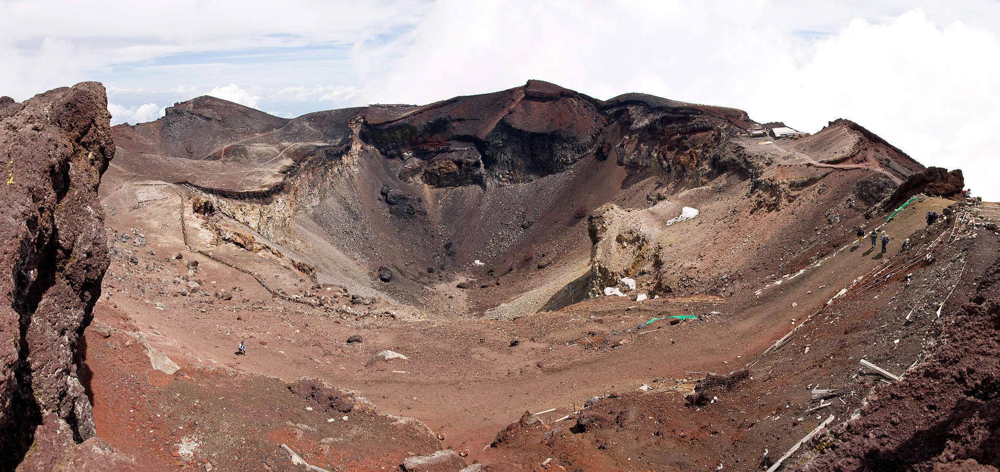
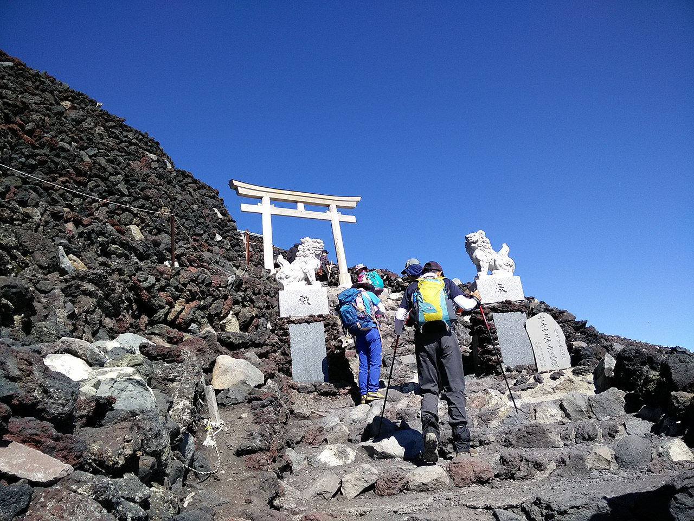
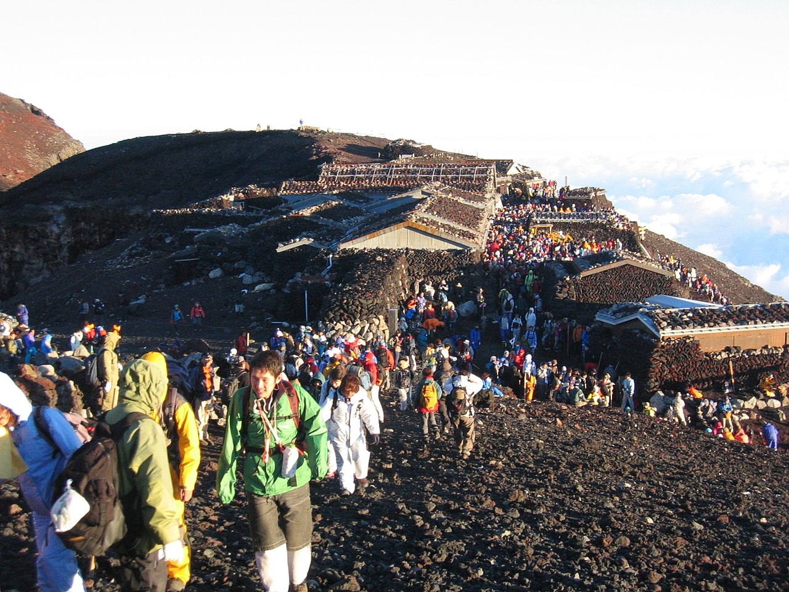

Gunung Fuji merupakan sebuah gunung yang terletak dalam pulau Honshu. Gunung tersebut memiliki ketinggian 3.776,24m, yang mengakibatkan gunung tersebut terkategorisasi sebagai gunung tertinggi dalam Jepang. Gunung tersebut merupakan gunung berapi aktif yang terakhir meletus sekitar tahun 1700-an. Secara fisik, gunung dapat terlihat dari barat daya Tokyo pada hari cerah karena berada sekitar 100km dari kota tersebut. Selain itu, bentuk Gunung Fuji biasanya terlihat tertutup salju setiap lima bulan setahun. Lokasi tersebut merupakan ikon budaya Jepang, dan biasanya menjadi atraksi untuk turis serta menjadi fokus kepada berbagai karya seni dan fotografi.
Etimologi

Kanji saat ini untuk Gunung Fuji terdiri dari dua karakter, yaitu 富 dan 士, masing-masing berarti "kekayaan" atau "berlimpah" dan "orang yang berstatus". Namun, namanya ada sebelum kanji, dan karakter ini adalah ateji, artinya mereka dipilih karena pengucapannya sesuai dengan suku katanya tetapi tidak memiliki arti yang berkaitan dengan gunung.
Asal mula nama Fuji tidak diketahui jelas, karena tidak ada catatan tentang nama pertama yang dipanggil dengan nama ini. Sebuah teks abad ke-9, Tale of the Bamboo Cutter, mengatakan bahwa nama tersebut berasal dari "abadi" (不死 fushi, fuji) dan juga dari gambaran dari berlimpah atau banyak berlimpah atau banyak (富 fu) tentara (士 shi, ji) yang mendaki lereng gunung. Sebuah etimologi rakyat awal mengklaim bahwa Fuji berasal dari 不二 (bukan + dua), yang berarti tanpa padanan atau nonpareil.
Hirata Atsutane, seorang cendekiawan klasik Jepang pada zaman Edo, berspekulasi bahwa nama tersebut berasal dari sebuah kata yang berarti, "gunung yang berdiri dengan indah seperti telinga telinga (穂 ho) tanaman padi". Misionaris Inggris John Batchelor (1854–1944) berpendapat bahwa nama tersebut berasal dari bahasa Ainu untuk "api" (fuchi) dari nama dewa api Kamui Fuchi, yang kemudian ditolak oleh ahli bahasa Jepang Kyōsuke Kindaichi atas dasar perkembangan fonetik (perubahan suara). Juga disebutkan bahwa huchi berarti "wanita tua" dan ape adalah kata untuk "api", ape huchi kamuy adalah dewa api. Penelitian tentang distribusi nama tempat yang memasukkan fuji sebagai bagiannya juga menunjukkan asal kata fuji dalam lebih berasal dari bahasa Yamato daripada Ainu. Toponimis Jepang Kanji Kagami berpendapat bahwa nama tersebut memiliki akar yang sama dengan wisteria (藤 fuji) dan pelangi (虹 niji, tetapi dengan bacaan alternatif, fuji). Ahli bahasa modern Alexander Vovin mengajukan hipotesis alternatif berdasarkan bacaan Jepang Kuno */puⁿzi/: kata tersebut mungkin dipinjam dari Bahasa Jepang Kuno Timur */pu nusi/火主 yang berarti 'ahli api'.
Variasi
Dalam bahasa Inggris gunung tersebut dikenal dengan nama Mount Fuji. Beberapa sumber menyebutnya sebagai "Fuji-san", "Fujiyama" atau secara lebih berlebihanya, "Gunung Fujiyama". Penutur bahasa Jepang menyebut gunung sebagai "Fuji-san". "San" ini bukanlah gelar kehormatan yang digunakan untuk nama orang, seperti Watanabe-san, tetapi pembacaan Sino-Jepang dari karakter yama (山, "Gunung"). Dalam alih aksara Nihon-shiki dan Kunrei-shiki, nama tersebut diterjemahkan menjadi Huzi.
Nama Jepang lain untuk Gunung Fuji, yang telah menjadi usang atau puitis, termasuk Fuji-no-Yama (ふじの山, "Gunung Fuji"), Fuji-no-Takane (ふじの高嶺, "Puncak Tinggi Fuji"), Fuyō-hō (芙蓉峰, "Puncak Teratai"), dan Fugaku (富岳／富嶽), yang dibuat dengan menggabungkan karakter pertama 富士, Fuji, dan 岳, Gunung.
Etimologi

Gunung Fuji, sebuah gunung kerucut vulkanik, menjadi populer sebagai subjek seni Jepang setelah tahun 1600 ketika Edo menjadi ibu kota dan orang-orang melihatnya ketika melakukan perjalanan di jalan Tōkaidō. Seiring berjalannya waktu, gunung tersebut dianggap sakral sejak zaman kuno dan menjadi subjek dari banyak puisi dan literatur Jepang. Bahkan pada abad pertengahan, gunung ini dianggap sebagai gunung "nomor satu" di dunia yang dikenal dari tiga negara, yaitu India, Cina, dan Jepang. Kaki gunung pernah digunakan sebagai area pelatihan terpencil oleh samurai kuno di dekat kota Gotemba, dan Shogun Minamoto no Yoritomo bahkan membawahi yabusame di daerah tersebut pada awal periode Kamakura. Meskipun dulu dilarang untuk wanita, pada zaman Meiji di akhir tahun 1860-an, wanita juga diizinkan untuk naik ke puncak Gunung Fuji.
Sir Rutherford Alcock adalah seorang asing yang melakukan pendakian pertama ke Gunung Fuji pada bulan September 1860. Ia berhasil mendaki gunung tersebut dalam waktu 8 jam dan turun dalam waktu 3 jam. Narasinya yang singkat di The Capital of the Tycoon menjadi deskripsi pertama yang tersebar luas tentang gunung tersebut di Barat. Wanita non-Jepang pertama yang berhasil mendaki Gunung Fuji adalah Lady Fanny Parkes, istri duta besar Inggris Sir Harry Parkes, pada tahun 1867. Sementara itu, dua tahun setelah itu, seorang fotografer bernama Felice Beato juga berhasil mendaki Gunung Fuji.
Pada tanggal 5 Maret 1966, pesawat BOAC penerbangan 911 dengan Boeing 707 mengalami kecelakaan dan jatuh di dekat pos kelima Gunung Fuji Gotemba Baru. Kecelakaan terjadi tak lama setelah pesawat tersebut lepas landas dari Bandar Udara Internasional Tokyo dan tidak ada lagi kontak dengan pesawat. Seluruh 113 penumpang dan 11 awak pesawat meninggal dunia akibat bencana ini. Clear-air turbulence ekstrim, yang disebabkan oleh gelombang lee yang melawan arah angin gunung, menjadi penyebab utama kecelakaan tersebut. Terdapat peringatan untuk kecelakaan itu di dekat pos kelima Gotemba New.
Sekarang, Gunung Fuji menjadi salah satu destinasi wisata dan pendakian gunung yang populer di seluruh dunia. Pada awal abad ke-20, Frederick Starr, seorang pendidik terkenal, memberikan ceramah tentang pengalamannya mendaki Gunung Fuji pada tahun 1913, 1919, dan 1923, sehingga membuat gunung ini terkenal di Amerika. Ada pepatah populer di Jepang yang mengatakan bahwa orang yang bijaksana hanya akan mendaki Gunung Fuji sekali seumur hidup, sementara orang yang bodoh akan mencobanya dua kali. Gunung Fuji masih menjadi simbol budaya Jepang yang populer, sering muncul dalam film dan logo Infiniti, dan bahkan terkait dengan tanda Pneumocephalus dalam pengobatan.
Pada bulan September 2004, stasiun cuaca manusia di puncak Gunung Fuji ditutup setelah beroperasi selama 72 tahun. Pengamat menggunakan radar untuk memantau keadaan cuaca seperti adanya badai topan dan hujan lebat. Stasiun cuaca tersebut merupakan yang tertinggi di Jepang, berada pada ketinggian 3.780 meter (12.402 kaki) di atas permukaan air laut. Sekarang, stasiun cuaca manusia tersebut telah digantikan oleh sistem meteorologi otomatis.
Pada tanggal 22 Juni 2013, Gunung Fuji secara resmi ditambahkan ke Daftar Warisan Dunia sebagai Situs Budaya. Namun, pengakuan tersebut kemudian menimbulkan kontroversi setelah dua profesor di Pusat Warisan Dunia Gunung Fuji, yang berada di wilayah Shizuoka, dipaksa untuk mengundurkan diri dari pekerjaan mereka pada Maret 2018 karena pelecehan akademis dan rasial yang dilakukan oleh pejabat pemerintah prefektur Shizuoka.
Geografi

Gunung Fuji merupakan fitur geografis yang unik di Jepang. Gunung ini memiliki ketinggian 3.776,24 m (12.389 kaki) dan terletak di pusat pulau Honshu, dekat dengan pantai Pasifik dan sebelah barat daya Tokyo. Gunung Fuji berada di perbatasan Prefektur Shizuoka dan Yamanashi dan dikelilingi oleh empat kota kecil, yaitu Gotemba di timur, Fujiyoshida di utara, Fujinomiya di barat daya, dan Fuji di selatan. Gunung ini dikelilingi oleh lima danau, seperti Danau Kawaguchi, Danau Yamanaka, Danau Saiko, Danau Motosu, dan Danau Shōji, dan termasuk dalam Taman Nasional Fuji-Hakone-Izu. Dalam cuaca yang cerah, Gunung Fuji dapat dilihat dari jauh, bahkan dari Yokohama, Tokyo, dan kadang-kadang dari Chiba, Saitama, Tochigi, Ibaraki, dan Danau Hamana. Gunung ini bahkan pernah difoto dari luar angkasa selama misi pesawat ulang-alik.
Iklim
Puncak Gunung Fuji memiliki iklim tundra (menurut klasifikasi iklim Köppen: ET). Suhu di wilayah tersebut sangat dingin, dan puncaknya dilapisi salju selama beberapa bulan setiap tahun. Rekor suhu terendah di daerah tersebut tercatat pada Februari 1981, mencapai -380°C (-652°F), sementara suhu tertinggi yang tercatat terjadi pada Agustus 1942, mencapai 178°C (352°F).
Geologi

Gunung Fuji terletak di perbatasan tiga lempeng tektonik, yaitu Lempeng Amurian, Lempeng Okhotsk, dan Lempeng Laut Filipina, yang membentuk bagian barat, timur, dan Semenanjung Izu di Jepang. Lempeng Pasifik bersubduksi di bawah lempeng ini, menyebabkan aktivitas vulkanik. Gunung Fuji terletak di dekat tiga busur kepulauan, yaitu Busur Jepang Barat Daya, Busur Jepang Timur Laut, dan Busur Izu-Bonin-Mariana.
Kawah utama Gunung Fuji memiliki diameter sekitar 780 meter dan kedalaman sekitar 240 meter. Sudut kemiringan di kawah berkisar antara 31°–35°, sedangkan sudut kemiringan di luar jarak tersebut berkisar sekitar 27° karena peningkatan skoria. Sudut kemiringan sisi tengah menurun dari 23° menjadi kurang dari 10° di kaki bukitnya.
Gunung Fuji telah mengalami empat fase aktivitas vulkanik yang berbeda. Fase pertama, Sen-komitake, terdiri dari inti andesit yang baru-baru ini ditemukan jauh di dalam gunung. Fase berikutnya adalah Komitake Fuji, lapisan basal yang diyakini terbentuk beberapa ratus ribu tahun yang lalu, diikuti oleh Fuji Tua yang terbentuk sekitar 100.000 tahun yang lalu. Yang terakhir adalah Fuji Baru yang diyakini terbentuk sekitar 10.000 tahun yang lalu di atas Fuji Tua.
Sejarah letusan Gunung Fuji telah dicatat. Letusan terakhir terjadi pada tahun 1707, dan setelah itu tidak ada tanda-tanda letusan lagi. Pada Maret 2011, gempa bumi terjadi di dekat Gunung Fuji, namun Badan Meteorologi Jepang melaporkan bahwa tidak ada tanda-tanda letusan yang akan terjadi. Saat ini, status Gunung Fuji tergolong aktif dengan risiko letusan rendah.
Kebahayaan Pada Masa Kini
Setelah terjadinya gempa bumi Tōhoku pada tahun 2011, muncul spekulasi di media bahwa guncangan tersebut bisa memicu aktivitas vulkanik di Gunung Fuji. Pada bulan September 2012, National Research Institute for Earth Science and Disaster Prevention (NRIESDP) melakukan permodelan matematika dan menemukan bahwa tekanan di dapur magma Gunung Fuji bisa menjadi 1,6 megapascal lebih tinggi dari sebelumnya pada saat terakhir meletus pada tahun 1707. Beberapa media mengartikan ini sebagai tanda bahwa letusan Gunung Fuji akan terjadi dalam waktu dekat. Namun, karena tidak ada metode yang dapat mengukur tekanan ruang magma secara langsung, perhitungan yang dilakukan NRIESDP bersifat spekulatif dan tidak dapat diverifikasi. Tanda-tanda lain yang menunjukkan meningkatnya bahaya letusan, seperti fumarol aktif dan sesar yang baru ditemukan, adalah hal yang lazim terjadi pada jenis gunung berapi ini. Selain itu, penganut Buddha Hokkeko dari sekte Nichiren Shoshu percaya bahwa mandala Dai Gohonzon dapat memberikan perlindungan supernatural dari dewa Buddha untuk mencegah letusan Gunung Fuji melalui ritual pagi hari Ushitora Gongyo.
Petualangan

Transportasi
Bandara terdekat yang memiliki layanan penerbangan internasional terjadwal adalah Bandar Udara Shizuoka. Yang dibuka pada Juni 2009 dan berjarak sekitar 80 kilometer (50 mil) dari Gunung Fuji. Bandar Udara Internasional Tokyo (Bandara Haneda) di Tokyo dan Bandar Udara Internasional Narita di Chiba berjarak sekitar tiga jam 15 menit dari Gunung Fuji.

Rute Pendakian
Pada tahun 2009, sekitar 300.000 orang mendaki Gunung Fuji. Periode paling populer untuk mendaki adalah dari bulan Juli hingga Agustus karena pondok dan fasilitas lainnya beroperasi dan cuaca yang lebih hangat. Bus yang menuju jalan setapak pendakian mulai beroperasi pada tanggal 1 Juli. Tidak disarankan untuk mendaki dari bulan Oktober hingga Mei karena cuaca dingin yang parah dan telah terjadi sejumlah kematian. Kebanyakan orang Jepang memulai pendakian pada malam hari agar bisa mencapai puncak saat matahari terbit, yang dikenal sebagai "goraikō" atau "kedatangan cahaya".
Gunung Fuji memiliki empat rute utama untuk mencapai puncak, dengan pos nomor di sepanjang setiap rute. Rute-rute tersebut adalah Kawaguchiko, Subashiri, Gotemba, dan Fujinomiya. Pendaki biasanya memulai pendakian dari pos kelima karena mudah dijangkau dengan mobil atau bus, dan puncak berada di pos kesepuluh di setiap jalur. Namun, pos-pos pada rute yang berbeda memiliki ketinggian yang berbeda pula, dengan pos kelima tertinggi di Fujinomiya, diikuti oleh Yoshida, Subashiri, dan Gotemba. Selain itu, terdapat empat rute tambahan dari kaki gunung, yaitu rute Shojiko, Yoshida, Suyama, dan Murayama.
Rute Yoshida merupakan rute yang paling populer karena memiliki area parkir yang luas dan banyak pondok gunung besar yang bisa digunakan sebagai tempat istirahat atau bermalam. Sebagian besar bus wisata pendakian Gunung Fuji bisa mencapai pos kelima selama musim panas. Rute terpopuler kedua adalah rute Fujinomiya, dengan pos kelima yang tertinggi, diikuti oleh Subashiri dan Gotemba. Waktu pendakian dari pos kelima baru bisa mencapai puncak antara lima hingga tujuh jam, sementara waktu turun bisa mencapai tiga hingga empat jam.
Meskipun kebanyakan pendaki tidak mendaki melalui rute Subashiri dan Gotemba, banyak dari mereka turun melalui jalur tersebut karena jalannya tertutup abu. Dari pos ketujuh hingga pos kelima, pendaki bisa berlari menuruni jalur yang tertutup abu ini selama sekitar 30 menit. Selain jalur tersebut, terdapat juga jalur traktor yang digunakan untuk mengangkut makanan dan bahan ke pondok gunung. Karena traktor sering mengambil sebagian besar lebar jalur dan mendorong batu besar dari sisi jalan, jalur traktor tidak diperbolehkan untuk pendakian atau penurunan di bagian yang terpisah dari jalur pendakian atau penurunan. Namun, terkadang orang dapat melihat orang-orang yang menuruni rute traktor dengan sepeda gunung dari puncak. Namun, ini sangat berisiko karena sulit untuk mengendalikan kecepatan dan mungkin menyebabkan beberapa batu berguling di sepanjang sisi jalan yang dapat membahayakan orang lain.
Gunung Fuji memiliki empat jalur yang menawarkan situs sejarah yang menarik. Rute Murayama adalah yang tertua, sementara rute Yoshida memiliki banyak kuil kuno, kedai teh, dan pondok yang tersebar di sepanjang jalurnya. Meskipun rute-rute ini sedang diperbaiki dan semakin populer, namun pendakian dari kaki gunung masih jarang dilakukan. Di sepanjang rute Yoshida, pendaki juga harus waspada karena sering ditemui beruang.
Pondok di dan di atas pos kelima biasanya dijaga selama musim pendakian, tetapi pondok di bawah pos kelima biasanya tidak dijaga untuk pendaki. Jumlah pondok terbuka di rute sebanding dengan jumlah pendaki. Rute Yoshida memiliki paling banyak pondok sementara Gotemba merupakan yang memiliki paling sedikit pondok gunung. Pondok di sepanjang rute Gotemba juga cenderung buka lebih lambat dan tutup lebih awal daripada yang ada di sepanjang rute Yoshida. Karena Gunung Fuji ditetapkan sebagai taman nasional, maka dilarang untuk berkemah di atas pos kelima.
Ada delapan puncak di sekitar kawah di puncak. Titik tertingginya sekaligus titik tertinggi di Jepang, Ken-ga-mine, adalah tempat Sistem Radar Gunung Fuji dahulu (digantikan oleh sistem otomatis pada tahun 2004). Pendaki bisa mengunjungi masing-masing puncak tersebut.
Paralayang
Berbagai aktivitas paralayang bisa dijumpai disekitar Gotemba, dimulai dari pos kelima. Penerbangan tersebut biasanya bermulai disekitar Subashiri dan puncak Hoei-zan, serta lokasi lain berdasarkan arah yang ditentukan oleh angin.